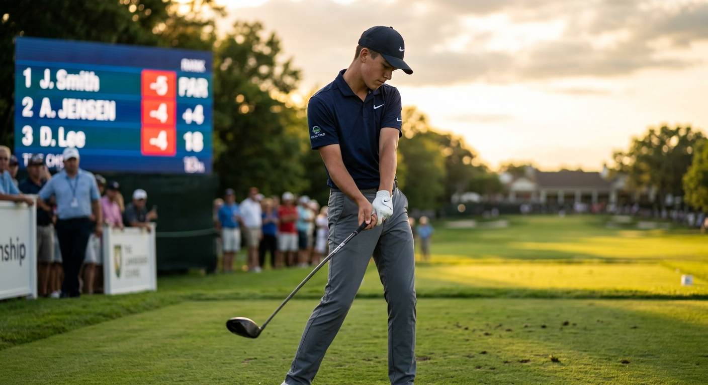
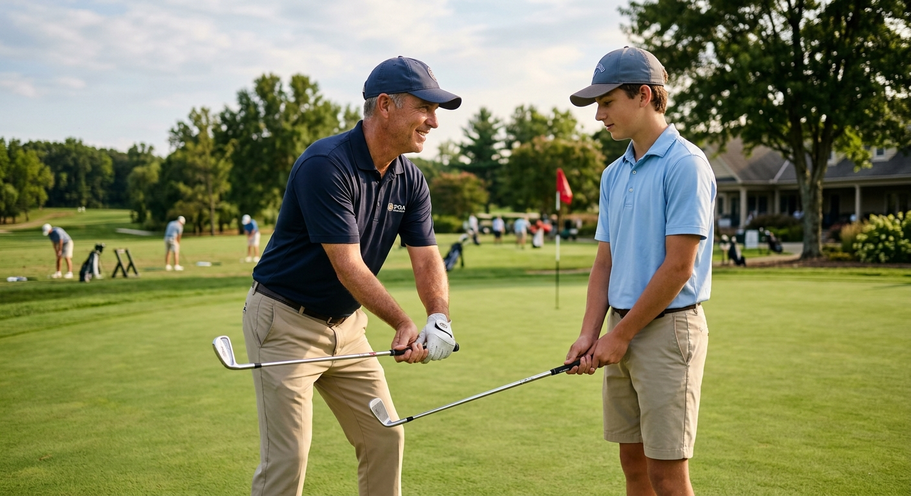

Continuous assessment and coaching for golfers ages 8 to 18. Mental game, biomechanics, and skills, with parents and coaches in the loop every step of the journey.
A junior golfer at 10 is not the same athlete at 13. Their body changes, their head changes, their game changes. Our assessment is not a snapshot. It is a running picture, refreshed every season, shared with the people who matter.
Baseline mental, biomechanical, and skills measurements. We meet the athlete where they are.
Coach builds a development blueprint matched to the athlete's age, stage, and goals.
Mental reps, swing reps, fitness reps. Practice that compounds.
Parents and coaches see progress in plain language. Everyone is in the room.
New numbers, new plan. Growth shows up on the page, not just on the course.
We meet the junior where they are. The 9-year-old who just picked up a club is on a different mission than the 16-year-old chasing a college roster spot. Both get the loop. Both get tracked. Both keep moving forward.

A junior golfer is not just a swing. We work the whole athlete, and we measure each part so you can see what is moving.
Focus, composure, post-mistake recovery. The skills tour pros rely on, taught early.
Force, rotation, sequence. Built for a body that is still growing, season by season.
Full swing, short game, putting, course management. Tracked, drilled, retested.
Parents and coaches in the loop. Same data, same language, same goals.
Junior development falls apart when the people around the athlete are guessing. We end the guessing.
Your athlete opens the app and knows what to work on. Drills, mental reps, fitness, and a record of progress they can be proud of.
The coach sees assessment results, longitudinal trends, and where to spend the next thirty minutes of lesson time. No guesswork.
You see what your athlete is working on, how they are improving, and what to encourage at home. No jargon, no opaque scoring.

"Mental toughness is not a destination, it is a habit. The earlier a junior builds the habit, the further it carries them. That is the whole reason I built this."Dave Bisbee · Founder, Wired2Win Golf · PGA Professional, mental performance coach
A 45-minute baseline assessment is the first step. We will tell you exactly where they are, and we will keep telling you, as they grow.